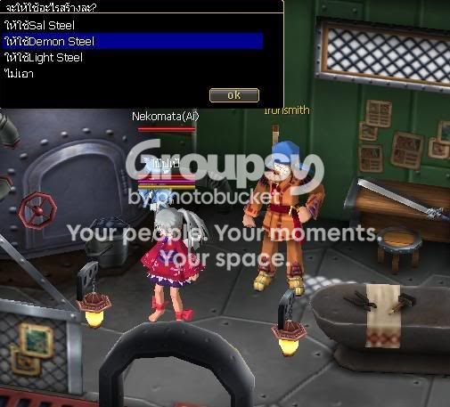
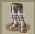
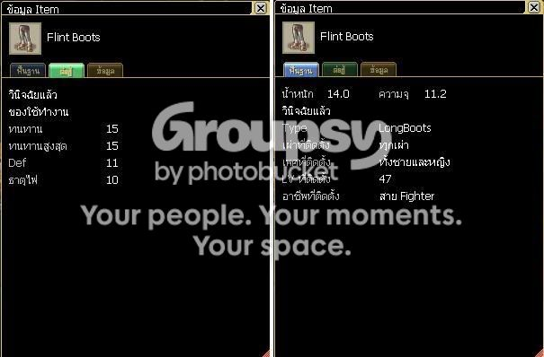
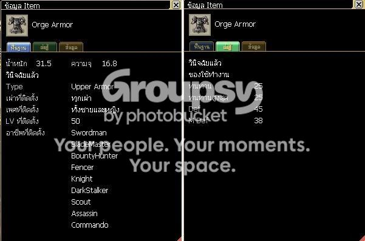
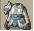
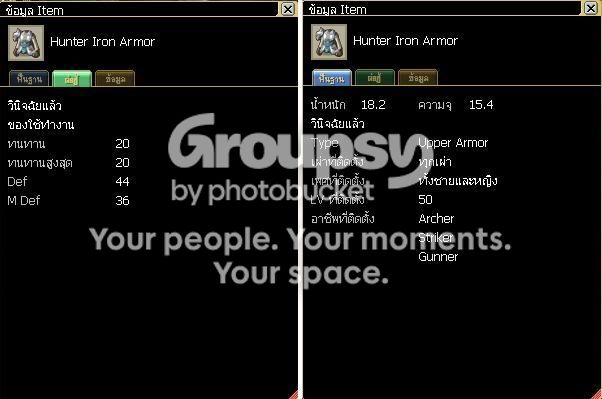

หน้า 4 จากทั้งหมด 8

โพสต์แล้ว:
พุธ 18 ก.ค. 2007 4:59 pmโดย ECO

Reenei เขียน:สรุปวิธีทำ
เควสชุด 75
1.ต้องเป็น Technical Job Lv 30 ขึ้นไป (Switch กลับมาแล้วก็รับได้ ถ้าหน้าจอตอน Login Tech.Job 30+)
2.รับเควสกะ Madam ซ้ายล่างอัพทาว แล้วไปฆ่าตัวอะไรก็ได้ให้ครบ 999 ตัว (ไม่นับต้นไม้ใบหญ้า กล่อง หิน)
3.พอเควสสำเร็จกลับมาคุยกับ Madam จะได้กุญแจสวนลอยฟ้ามา แล้วรับเควส เจ้าหญิงเอาแต่ใจ
4.คุยกะ Madam อีกครั้ง แล้วขึ้นไปบนสวนลอยฟ้า จะมีไก่อย่ตัวนึง ให้นั่งเฉยๆ รอจนเวลาหมด แล้วคุยกะ Madam อีกครั้ง จะีมีคุณปู่โผล่มา(จากไหนหว่า)
5.พอฟังคุณปู่ด่าหลานเรียบร้อยแล้วก็ลงมาคุยกะ Madam อีกครั้ง เป็นอันเรียบร้อย
ชุดที่ซื้อได้จะเป็นคู่ของสายอาชีัพ
Bounty Hunter - Dark Stalker
Commando - Gunner
Sage - Enchanter
Bard - Necromancer
Machinery - Marionest
Treasure Hunter - Gambler
โพสต์แล้ว:
พุธ 18 ก.ค. 2007 8:39 pmโดย ECO
เฮ้ๆขุดช่วยมั่ง
ถามซะหน่อย
:arrow: คาเวียอะที่ใช้คุยกับเทียมาสอะหาได้จากไหนมั่งละ แล้วคนขายกันเท่าไหร่(เหมาหมดเซิฟ)
:arrow: แล้วเซลิโกะสีเขียวหาจากไหนอะ
Dry powder ใช้ Googo seed 1อัน ในการทำ ครั้งละ1000มั้ง(NPCหมวกแดง)
โพสต์แล้ว:
ศุกร์ 20 ก.ค. 2007 1:29 pmโดย ECO
กระทู้ดีๆๆๆตกไปหน้า 4 มีที่ ไหนคับเซ็ง
โพสต์แล้ว:
ศุกร์ 20 ก.ค. 2007 4:42 pmโดย ECO
เมื่อนำหิน Flint (Sal Steel) , Demon Steel , Light Steel อย่างละ 10 ชิ้น มาให้ NPC : Ironsmith จะสามารถแลกเป็น Item ต่างๆ ได้ตามหัวข้อดังนี้ค่ะ

Flint (Sal Steel) 10 ชิ้น สามารถนำมาแลกเป็น Item ได้ดังนี้ค่ะ
-- Sal Steel 10 ชิ้น แลกเป็น 
-- Sal Steel 10 ชิ้น แลกเป็น 
-- Sal Steel 10 ชิ้น แลกเป็น 
-- Sal Steel 10 ชิ้น แลกเป็น 



Demon Steel 10 ชิ้น สามารถนำมาแลกเป็น Item  ได้ค่ะ
ได้ค่ะ

Light Steel 10 ชิ้น สามารถนำมาแลกเป็น Item 
ได้ค่ะ

โพสต์แล้ว:
ศุกร์ 20 ก.ค. 2007 4:49 pmโดย ECO
Horn เขียน:เฮ้ๆขุดช่วยมั่ง
ถามซะหน่อย
:arrow: คาเวียอะที่ใช้คุยกับเทียมาสอะหาได้จากไหนมั่งละ แล้วคนขายกันเท่าไหร่(เหมาหมดเซิฟ)
:arrow: แล้วเซลิโกะสีเขียวหาจากไหนอะ
Dry powder ใช้ Googo seed 1อัน ในการทำ ครั้งละ1000มั้ง(NPCหมวกแดง)
- kavior จากหนามสีดำ kerby archen แมพ snow hill หรือ snow field หรือหน้าเมืองเหนือก็ได้คับจะตกง่ายกว่า
seriko เขียวแบบปกติ ตกจาก green pururu ถ้า light green ตกจาก salad archen
โพสต์แล้ว:
เสาร์ 21 ก.ค. 2007 10:17 pmโดย ECO
เอ้าช่วยกัน ขุดขึ้นไปอีกทีคับ น่าจะแปะไว้หน้าแรกได้แล้วนะเนี่ย
โพสต์แล้ว:
อาทิตย์ 22 ก.ค. 2007 9:57 pmโดย ECO
ผมต้องเข้ามาดูทุกวันเลยคือมันจำเปงมากแต่ไงตกมาหน้า 4 ได้ทุกวัน
โพสต์แล้ว:
จันทร์ 23 ก.ค. 2007 2:05 amโดย ECO
ตรึงไป ก้เท่านั้น
แก้ไขคำพูดไม่ได้ ฮือๆๆ
โพสต์แล้ว:
จันทร์ 23 ก.ค. 2007 10:26 amโดย ECO
+*+ยังไงก้ออยู่หน้าแรกนะท่านเผื่อคนยังไม่รู้ มันชอบตกไปอยู่หน้า 4 ของดีๆๆมันต้องใช้งับ
โพสต์แล้ว:
จันทร์ 23 ก.ค. 2007 6:54 pmโดย ECO
chekalzz บันทึก:
→ ให้ไปหาคุนยาย เบอร์ 5(uptown) ต้องพกเงินไปมากกว่า 100001 คุนยายจะให้เรากลับไปเมืองอโคโพลิส เพื่อไปคุยกับลูกชาย เบอร์ 4 จุดสีแดง(uptown acropolis) แล้วกลับไปคุบกับคุนยาย จะมีชุดของเบลด/บาวตี้ เลเวล 45 ขายให้
ที่จิงสำหรับสายไฟเตอร์ทุกอาชีพคับ เช่น อาเช่อร์ไปทำ ก้ได้ซื้อชุดอาเชอร์
-
โพสต์แล้ว:
จันทร์ 23 ก.ค. 2007 11:10 pmโดย ECO
ขุดจ้า มาขุดให้1จึก ข้อมูลอัดแน่นแบบว่า ไม่ต้องเดินเลย :oops:
ขอบพระคุณมากค่า
โพสต์แล้ว:
พฤหัสฯ. 26 ก.ค. 2007 7:17 pmโดย ECO
Spring Bouquet หาจากไหนอ่ะคับ?
โพสต์แล้ว:
ศุกร์ 27 ก.ค. 2007 11:09 amโดย ECO
รายการไอเท็ม ต้องให้ดูจากเว็บญี่ปุ่นก่อนคับ เพราะผมก้ทำเว็บไม่เป็น จึงลำบากนิดนึงในการดูรายละเอียดไอเท็ม แล้วลิ้งก้อยู่ในชื่อเมืองคับ กดดูได้เลย
วิธีดูข้อมูลในเว็บญี่ปุ่น
1. วิธีเข้าเว็บ จากชื่อ

2. วิธีดูรายชื่อของ (กรุณาดูตัวเลขในแมพ แล้วเลื่อนลงดูแถวๆล่าง)

3. วิธีดูรายละเอียด

4. วิธีดูรายละเอียด 2

5. วิธีดูรายละเอียด 3

6. วิธีดูรายละเอียด 4
 คำแปลอาชีพ ภาษาญี่ปุ่น
คำแปลอาชีพ ภาษาญี่ปุ่น
ノービス - Novice
ファイター系 - Fighter
ソードマン - Swordman
→ブレイドマスター - Blademaster
→バウンティーハンター - Bounty Hunter
フェンサー - Fencer
→ナイト - Knight
→ダークストーカー - Dark Stalker
スカウト- Scout
→アサシン - Assassin
→コマンド- Commando
アーチャー - Archer
→ストライカー - Striker
→ガンナー - Gunner
スペルユーザー系 - Spell User
ウィザード - Wizard
→ソーサラー - Soccerer
→セージ - Sage
シャーマン - Shaman
→エレメンタラー - Elementer
→エンチャンター - Enchanter
ウァテス - Vates
→ドルイド - Druid
→バード - Bard
ウォーロック - Warlock
→カバリスト - Kabbalist
→ネクロマンサー - Necromancer
バックパッカー系 - Backpacker
タタラベ - Tatarabe
→ブラックスミス - Blacksmith
→マシンナリー - Machinery
ファーマー - Farmer
→アルケミスト - Alchemist
→マリオネスト - Marionest
レンジャー - Ranger
→エクスプローラー - Explorer
→トレジャーハンター - Treasure Hunter
マーチャント - Merchant
→トレーダー - Trader
→ギャンブラー - Gambler

-
ร้านขายอุปกรณ์ อาวุธ เครื่องป้องกัน

-
ร้านขายอุปกรณ์นักเวทย์

-
ร้านปักเย็บ มีพวกเสื้อผ้าขาย

-
ร้านพ่อค้ากิลด์ บางเมืองมักมี 2 ร้าน ร้านนึงขายของใช้ยุกยิก อีกร้านขายของสวมใส่

-
ร้านเครื่องเพชร

-
เป็นร้านสำหรับเปิดกล่อง Purify Item ผสมยา ประกอบไม้ ซื้อเครื่อง Kit

-
ร้านบาร์ เป็น Quest Counter
โพสต์แล้ว:
พุธ 01 ส.ค. 2007 12:18 pmโดย ECO
ชุดของชาวนาตั้งแต่เวล 40 ไม่มีหรอคับ
ที่เมืองเหนือขายแต่เสื้อ แล้วเกง 40 ขายที่ไหนอ่ะคับ
อ้อ ขอถามอีกอย่างนะคับ รองเท้าเกราะเหล็กที่เป็นสีม่วง(ใส่เฉพาะ Dominion)
มันหาซื้อได้ที่ไหนอ่ะคับ
ขอบคุณครับ

โพสต์แล้ว:
พุธ 01 ส.ค. 2007 8:50 pmโดย ECO
สุดยอดเลยครับหาคนแบบนี้ยากมากเลย